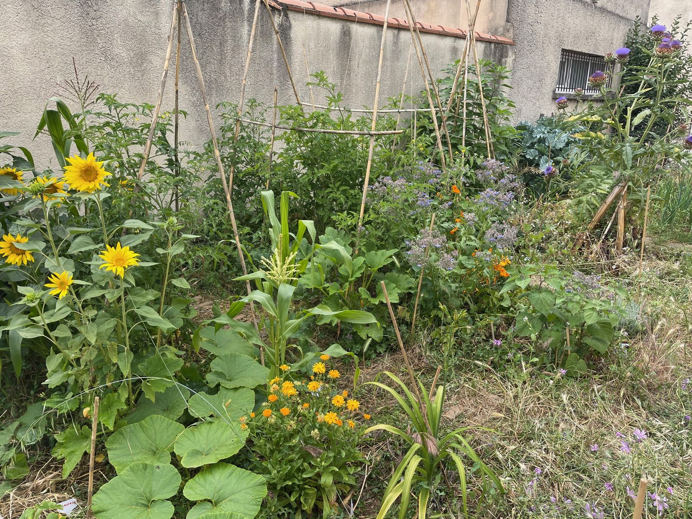
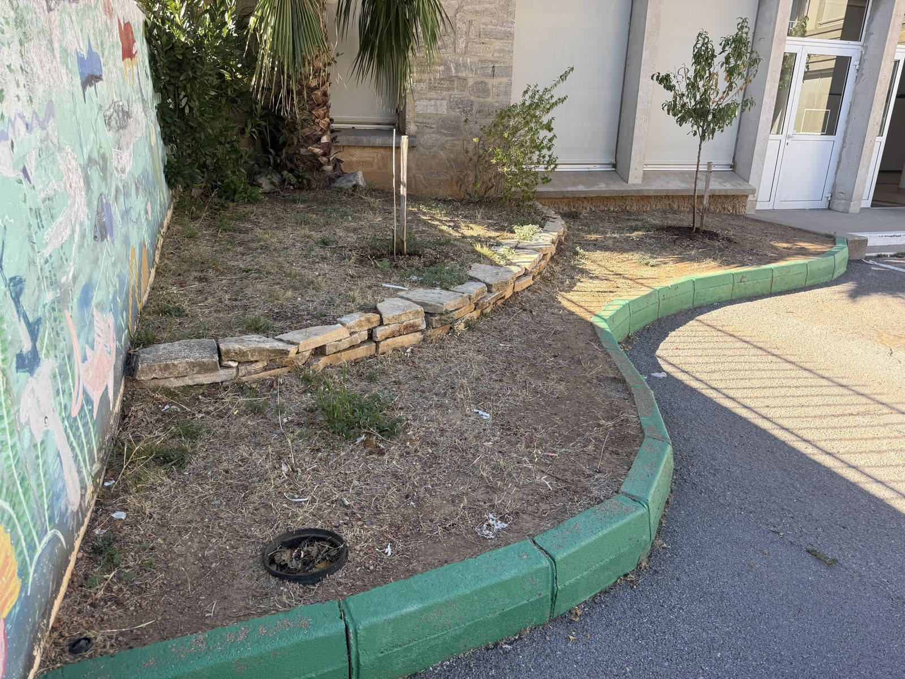

Un coin de nature comestible dans la cour de l’école
Le bosquet
fruitier des CP
Souvenez-vous
Du potager au bosquet fruitier

🥕 Le potager
- 🌱 On sème
- 🧺 On récolte
- 🔁 Et on recommence chaque année
🌳 Le bosquet fruitier
- 🌱 On plante une seule fois
- 📅 Les arbres restent des années
- 🍊 Des fruits chaque année
Cette fois, on plante pour longtemps !
Le projet
Un bosquet fruitier dans la cour de l’école

⇔
C’est quoi, un bosquet fruitier ?
🍊Un coin de nature
comestible
🐞Une maison pour
les petites bêtes
⇔ Glissez pour voir notre futur bosquet fruitier.
Question 1
Comment obtient-on un fruit ?
1
Une fleur s’ouvre
Floraison2
L’abeille passe
Pollinisation3
La fleur fane et un petit fruit apparaît
Nouaison4
Le fruit grossit
Croissance et mûrissement
Notre pêcher : 🌸 des fleurs roses au printemps ➜ des pêches en été
Question 2
À quoi servent les abeilles et les papillons ?
Sans abeilles…
pas de fruits !
Elles transportent le pollen de fleur en fleur.
🌸 Des plantes mellifères pour attirer les insectes
Question 3
Pourquoi certains fruits poussent ici… et pas d’autres ?
☀️ Beaucoup de soleil
🌦️ Peu de pluie
🧣 Un hiver doux
Question 4
Quels animaux vivent sur les plantes et dans le sol ?
Le projet
Qu’est-ce qu’on va planter ?
En résumé
Notre bosquet fruitier, un petit écosystème
Notre bosquet fruitier
☀️Du soleil
pour que les plantes poussent
💧De l’eau
l’arrosage automatique remis en marche
🪱Un sol vivant
compost, copeaux de bois et petites bêtes
🌸Des plantes mellifères
pour attirer les insectes
🐝Des insectes
qui pollinisent les fleurs
🌳Des arbres fruitiers
pour produire à manger
Le projet
Notre aventure de l’année
Vous êtes ici !🔍
Aujourd’hui
On découvre le projet.
🌱
Dans les prochaines semaines
- On plante
- On paille
- On observe le sol et ses petites bêtes
🌸
Au printemps
- On plante le clémentinier et le bananier
- On observe les fleurs, les fruits et les insectes
- On remplit notre carnet d’observation
🎨
À la fin
On dessine chacun un croquis explicatif du bosquet fruitier pour expliquer le projet.
Le projet
Les grandes règles du bosquet fruitier
👟
Je ne marche pas dans le bosquet fruitier
👀
J’observe sans arracher
🐞
Je prends soin des petites bêtes
👅
Je ne goûte rien sans un adulte
Bravo ! Vous êtes les jardiniers
du bosquet fruitier !
Des questions ?
🙋♀️ 🙋 🙋♂️